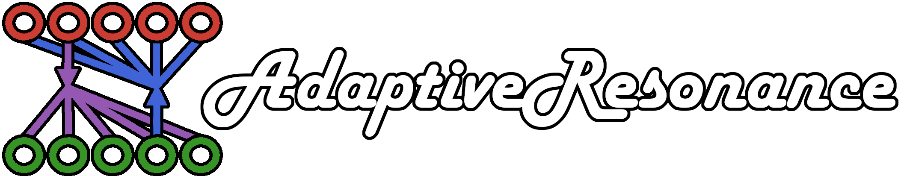

These pages serve as the official documentation for the AdaptiveResonance.jl Julia package.
Adaptive Resonance Theory (ART) began as a neurocognitive theory of how fields of cells can continuously learn stable representations, and it has been utilized as the basis for a myriad of practical machine learning algorithms. Pioneered by Stephen Grossberg and Gail Carpenter, the field has had contributions across many years and from many disciplines, resulting in a plethora of engineering applications and theoretical advancements that have enabled ART-based algorithms to compete with many other modern learning and clustering algorithms.
The purpose of this package is to provide a home for the development and use of these ART-based machine learning algorithms in the Julia programming language.
See the Index for the complete list of documented functions and types.
Manual Outline
This documentation is split into the following sections:
The Package Guide provides a tutorial to the full usage of the package, while Examples gives sample workflows using a variety of ART modules. A list of the implemented ART modules is included in Modules, where different options are also listed for creating variants of these modules that exist in the literature.
Instructions on how to contribute to the package are found in Contributing, and docstrings for every element of the package is listed in the Index. Names internal to the package are also listed under the Developer Index.
Documentation Build
This documentation was built using Documenter.jl with the following version and OS:
AdaptiveResonance v0.8.1 docs built 2023-02-01T15:05:22.527 with Julia 1.8.5 on LinuxCitation
If you make use of this project, please generate your citation with the CITATION.cff file of the repository. Alternatively, you may use the following BibTeX entry for the JOSS paper associated with the repository:
@article{Petrenko2022,
doi = {10.21105/joss.03671},
url = {https://doi.org/10.21105/joss.03671},
year = {2022},
publisher = {The Open Journal},
volume = {7},
number = {73},
pages = {3671},
author = {Sasha Petrenko and Donald C. Wunsch},
title = {AdaptiveResonance.jl: A Julia Implementation of Adaptive Resonance Theory (ART) Algorithms},
journal = {Journal of Open Source Software}
}